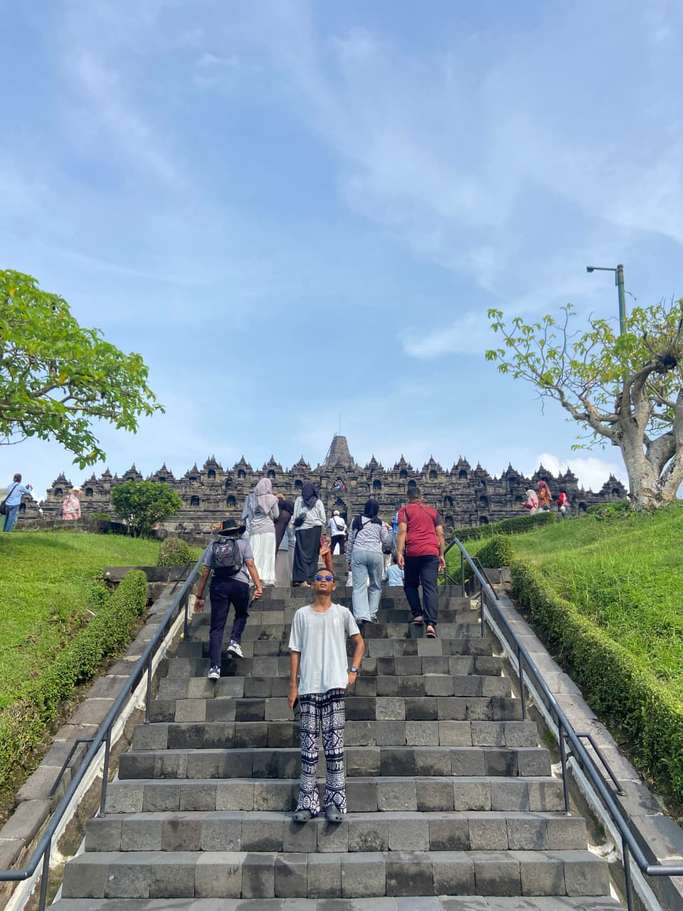

Tentang Saya

Halo! Saya adalah seorang pembelajar di bidang pengembangan web yang berfokus pada penulisan kode yang bersih, semantik, dan solutif
Keahlian Saya
- JavaScript Dasar
- Python Dasar
- Struktur Dokumen HTML Semantik
- Canva Design Mahir
Portofolio Saya
-
Web Biodata Pribadi Pertama
Proyek latihan mandiri untuk merancang struktur biodata dengan HTML dasar.
-
Latihan Struktur Dokumen HTML Semantik
Implementasi tag header, nav, main, section, dan footer sesuai standar validasi tugas.
Prestasi saya
- Lulusan Terbaik Angkatan Tahun 2026 MAS Attaqwa 04 KOta Bekasi
- Juara 3 Olimpiade Madrasah Indonesia Bidang Geografi Tingkat Kota Bekasi
- Peserta Olimpiade Madrasah Indonesia Bidang Geografi Tingkat Jawa Barat
- Juara Harapan Terbaik 2 Olimpiade Sains Attaqwa Bidang Sains Se-Perguruan Attaqwa
Kontak saya
Tertarik bekerja sama atau berdiskusi seputar web development? silakan hubungi saya melalui:
- Email: mochamadfahruroji27@gmail.com